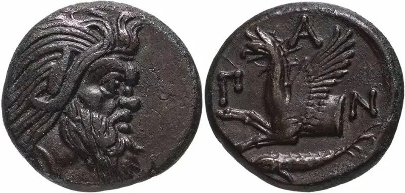

IV век до н.э. Пантикапей, первые монеты на территории России
Первыми деньгами на территориях, которые позднее войдут в состав России, были монеты древнегреческого города Пантикапей неподалеку от современной Керчи. Выпуск монет там начался в IV веке (344 - 310 гг.) до н.э. Позднее на черноморском и азовском побережьях обращались деньги Боспорского царства, Древнего Рима и Византии. Подробнее об этом можно узнать из статьи «Монеты Боспорского царства».
II-XII века н.э. Обращение иностранных монет
На прочих восточноевропейских землях денежное обращение началось значительно позднее. Во II веке н.э. отмечается массовый, но кратковременный приток серебряных римских монет на территории современных Украины и Беларуси. А в конце VIII века (709 года), то есть после продолжительного отсутствия каких-либо монет, сюда начали поступать куфические (арабские) дирхемы.

В 882 году новгородский князь Олег захватил Киев, сделал его своей резиденцией и столицей - «матерью городов русских», однако чеканка собственных монет началась там не сразу: основу денежного обращения продолжал составлять дирхем. Массовый ввоз дирхемов закончился незадолго перед концом первого тысячелетия из-за сокращения их чеканки в халифате.

X-XI века. Выпуск первых монет Древнерусского государства
Д.В. Гулецкий и К.М. Петрунин предполагают, что первыми монетами Древнерусского государства были подражания саманидским дирхемам с изображением на одной из сторон головы сокола и креста. Вероятно, они были созданы при княгине Ольге (945-960 гг. правления).

Большинство других исследователей считают, что первые монеты были выпущены при ее внуке - князе Владимире Святославиче (правил в Киеве в 978-1015 гг.). Сейчас они называются «сребреники» и «златники», хотя оригинальное название «сребреника» было, предположительно, «ногата». Параметры серебряных монет Владимира похожи на параметры дирхемов, а прототипами золотых монет - как по весу, так и по дизайну - были византийские номисмы. Монетные выпуски Крестителя Руси были обильными, о чем свидетельствует большое количество штемпелей, использовавшихся для чеканки. Однако все равно возникают сомнения, использовались ли эти монеты в денежном обращении или предназначались исключительно для подарков и наград. Подробнее об этом можно узнать из статьи «Первые деньги на Руси».
XII-XIV века. Безмонетный период
В начале XII века поступление иностранных монет на Русь почти полностью прекратилось, и до второй половины XIV века продолжался так называемый «безмонетный период». До сих пор не завершены споры о том, что играло роль денег в эти годы. Благодаря обнаружению книги арабского путешественника Абу Хамида, посетившего Русь в XII веке, получила подкрепление версия об использовании в этом качестве беличьих шкурок - точнее, их связок по 18 штук, опечатанных свинцовой пломбой с изображением князя. Такая связка равнялась по стоимости серебряному дирхему. Также в качестве возможных заменителей денег назывались бусы, стеклянные браслеты и шиферные пряслица.

А при крупных сделках роль денег стали играть платежные слитки стандартного веса и формы, обычно называемые гривнами. Существовали различные центры производства таких слитков, и стандарты их выпуска различались. К примеру, киевская гривна имела характерную шестиугольную форму и вес 163,73 г (1/2 византийской литры). Новгородская гривна напоминала длинную палочку и весила 204,8 г (1/2 европейского фунта). Северорусские или черниговские гривны имеют четырехугольную (ромбовидную) или овальную форму с вытянутыми концами; по весу они близки к новгородским гривнам. Также имелись татарские, литовские, галичские и волынские слитки.
В XIII веке для новгородских гривен стало употребляться наименование «рубль», которое постепенно вытеснило название «гривна». В XIV веке в Московском, Тверском и Литовском великих княжествах стали использоваться половины рублевых слитков - полтины. Также в XIV веке на русских землях начали обращаться серебряный данг и медное пуло Улуса Джучи (Золотой Орды). В результате, безмонетный период закончился, а вскоре началась чеканка собственных монет русских княжеств.
1370-е гг. Начало чеканки монет в Москве и других княжествах
Чеканка собственных монет в Великом княжестве Московском началась, вероятно, в конце 1370-х гг. при Дмитрии Ивановиче Донском. До этого момента там, как и в других русских землях, расположенных поблизости от Улуса Джучи, какое-то время производились двусторонние подражания джучидским дангам.
Московские денги - единственный вид монет, выпускавшихся в первые годы самостоятельной чеканки - были примерно на треть легче дангов и иногда перечеканивались из обрезанных джучидских монет. Позднее, при Василии I Дмитриевиче (1389-1425 гг. правления), появились еще два номинала - серебряная полуденга и медное пуло.

Судя по известным нам монетам, как минимум со времен Василия I совсем крошечное по тем временам Великое княжество Московское претендовало на то, чтобы стать центром объединения всех земель Древней Руси: именно при этом князе на московских монетах впервые появился титул «Князь великий всея Руси». На другой стороне тех же монет часто помещалась надпись «Султан Токтамыш хан, да увековечится (царство его)», поскольку в те годы московские правители получали права на княжение у ханов Золотой Орды.(1432-1454 гг.)

Тогда же, в конце XIV века, началась чеканка монет во многих удельных княжествах (Серпуховском, Галичско-Звенигородском, Можайском, и т.д.), а также в других великих княжествах. Однако удельная чеканка продлилась менее ста лет: к концу 1450-х годов в подчиненных Москве удельных княжествах перестали выпускаться собственные монеты. Вся чеканка сосредоточилась в Москве, а позднее - также в присоединенных в конце XV - начале XVI вв. и имевших собственные монетные дворы Великом Новгороде, Твери и Пскове.
В период правления Василия III (1505-1533 гг.) московская денежная система достигла наивысшей степени стандартизации. В нее входили четыре номинала монет:
- новгородская денга: серебро 960 пробы, нормативный вес - 0,78 г (260 штук из гривенки, равной 204,756 г);
- московская денга: серебро 960 пробы, нормативный вес - 0,39 г;
- новгородская четверетца, или московская полуденга (полушка): серебро 960 пробы, нормативный вес - 0,19 г;
- пуло: медь, приблизительный вес от 0,2 до 0,46 г. Новгородская денга в те годы стоила 120-140 пул.
1535-1538 гг. Реформа Елены Глинской
Целью денежной реформы, задуманной, вероятно, еще при Василии III и проведенной в период регентства его вдовы Елены Глинской над малолетним великим князем Иваном IV, было:
- уменьшить стандартный вес изготавливаемых монет: вместо 260 новгородских или 520 московских денег из весовой серебряной гривенки стали чеканить 300 новгородок или 600 московок;
- изъять из обращения поддельные и испорченные (обрезанные) монеты;
- изъять из обращения вообще все монеты старых чеканов, в том числе, очевидно, и остававшиеся еще в обороте монеты удельных княжеств.

В феврале-марте 1535 года началось проведение реформы, то есть, вероятно, был выпущен указ о ней. 20 июня или июля 1535 года в Новгороде приступили к исполнению этого указа и начали чеканить монеты нового образца. Также в 1535 году запретили хождение обрезанных денег: их переплавляли в слитки для изготовления новых монет. В 1536 году перестали обращаться старые денги-новгородки, а в 1538 году - московки. Не позднее июня 1538 года новая монета новгородка получила название «копейка». Этот год, по всей видимости, является завершающей датой реформы.
После реформы сложилась монетная система, состоящая из копейки (серебро 960 пробы, 0,68 г), денги (0,34 г), четверетцы / полуденги (0,17 г) и пула (медь, 0,33-0,52 г). Имелись также условные счетные единицы: алтын, равный трем копейкам, и рубль, состоявший из 100 копеек. Норматив веса монет оставался неизменным все годы правления Ивана IV Грозного, а также при трех следующих царях: Федоре Ивановиче, Борисе Федоровиче (Годунове) и Дмитрии Ивановиче (Лжедмитрии I). Лишь в последние годы смуты их вес начал снижаться.
1589-1610 гг. Первый массовый вброс поддельных монет
Подделки в ущерб обращению встречались во все века. Однако известны случаи, когда подделки появлялись массово, и первым таким вбросом являются монеты Английской московской компании. Эта компания получила в 1569 году привилегию беспошлинной перечеканки серебра на русских денежных дворах. После смерти Ивана Грозного ее лишили этой привилегии, и для восполнения своих убытков не позднее 1610 года (а скорее всего, в 1589-1595 гг.) она начала выпуск поддельных копеек с именами Ивана Грозного и Федора Ивановича. По весу и пробе «западные» копейки мало отличались от подлинных русских монет того времени: они изготавливались из серебра 960 пробы и имели вес 0,53-0,67 г. От подлинных монет Московского царства монеты английской Московской компании отличает иная форма букв в надписях. Также на них иногда присутствуют буквы под всадником, никогда не использовавшиеся на подлинных копейках - К/ХХ.

В дальнейшем были и другие массовые выпуски подделок. В конце 1610-х гг. поддельные «чешуйки» выпускали Швеция и Дания, а в 1788-1790 гг. Швеция наладила чеканку поддельных 5-копеечных монет.
1606-1698 гг. Уменьшение веса монет в годы Смуты и при первых Романовых
После убийства Лжедмитрия I в 1606 году вес проволочных монет начал снижаться. У государства не хватало серебра для чеканки монет, причем в разграблении казны современники обвиняли нового царя Василия IV Шуйского, а вовсе не его предшественника. В начале правления Василия копейки в среднем весили 0,64 г вместо прежних 0,68 г, а к концу правления их вес уменьшился до 0,60 г. Но пока что это снижение считалось временной мерой, то есть правительство рассчитывало позднее вернуться к чеканке 300 копеек из гривенки. В условиях нехватки серебра пришлось даже начать чеканку копеек из золота (московский аналог нотгельдов или «денег чрезвычайных обстоятельств»): одна золотая копейка была приравнена к десяти серебряным.

В 1610 году был свергнут и Василий Шуйский. На престол пригласили наследника польского престола, королевича Владислава Жигимонтовича (Сигизмундовича), и начали выпуск монет от его имени. И хотя его предстоящее воцарение воспринималось московскими боярами как конец смуты, вернуть прежний вес монет не удалось. После непродолжительной чеканки полновесных копеек, их вес вновь стал снижаться. В итоге, поздние монеты с именем Владислава весят от 0,37 до 0,47 г.
Второе земское ополчение, созданное князем Пожарским для изгнания поляков из Москвы, также занималось выпуском копеек пониженного веса: от 0,51 до 0,6 г. Причем их чеканили с именем давно умершего царя Федора Ивановича.
С приходом к власти Романовых в 1613 году в Москве началась чеканка копеек по 4-рублевой стопе: 400 копеек из гривенки, то есть 0,51 г на каждую монету. В 1626 году из гривенки чеканилось уже 425 копеек, то есть 0,48 г каждая. С 1630-х гг. фактический средний вес еще раз уменьшается до 0,45 г. Около 1650 года происходит возврат к нормативам 1626 года, и такая ситуация сохраняется до 1681 года, когда фактический средний вес монет снижается до 0,40 г. В 1698 году, уже при Петре I, серебряная копейка достигла своего минимального веса - 0,28 г, то есть даже меньше, чем весила московская денга при Иване Грозном.
1654-1663 гг. Реформа Алексея Михайловича

Ввести монеты более крупных номиналов впервые попытался Алексей Михайлович в ходе реформы 1654-1663 гг.: тогда были выпущены рубль, полтина, полуполтина, алтын (3 копейки) и грош (2 копейки). Все крупные серебряные монеты являлись неполноценными, то есть в них содержалось меньше драгоценного металла, чем в соответствующем количестве серебряных копеек. Также были введены медные копейки, приравненные к серебряным.

Однако реформа закончилась крахом. С 1658-1659 гг. налоги велели собирать серебром, а выплаты из казны производить медными монетами. Чтобы заплатить налоги, людям приходилось где-то обменивать медные монеты на серебряные. Ничем не обеспеченная медь обесценилась: за 1 рубль серебром стали давать 15 рублей медью, то есть фактический размер налогов взлетел в 15 раз. Это привело к расстройству всей экономики и «медному бунту» 1662 года, после чего медные копейки отменили: их выкупили у населения, но уже по курсу 100 медных копеек за 1 серебряную. Россия вернулась к прежней денежной системе, где самой крупной монетой вновь стала серебряная копейка.
1700-1718 гг. Реформа Петра I
Главным достижением реформы Петра I стало введение монет различных номиналов из золота, серебра и меди. Для их производства переоборудовали монетные дворы, началось использование винтовых прессов и иных передовых технологий чеканки. По внешнему виду и качеству изготовления монеты России стали напоминать лучшие образцы денег Европы того времени. Серебряные проволочные копейки («чешуйки») постепенно заменялись на медные.

По результатам реформы, введенные крупные номиналы монет прижились. Несмотря на частые изменения монетной стопы как для серебра, так и для меди, монеты с аналогичными номиналами продолжали выпускаться до конца существования Российской империи.
ну на этом всё, следующие монеты будут российской империи.